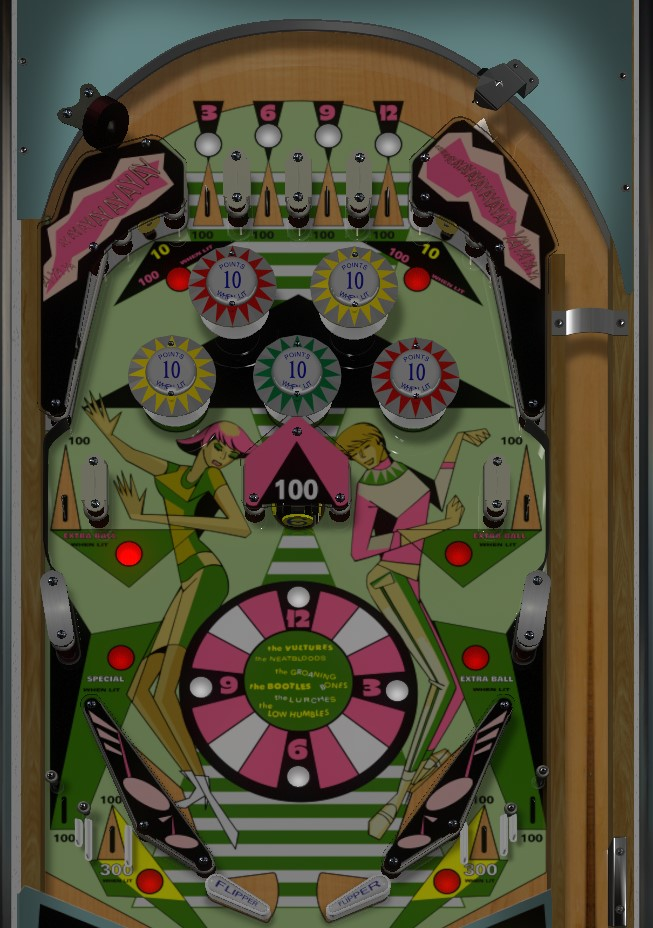

Collect 3-6-9-12 numbers from the top lanes or rotating center target to light various features around the table. Once everything is lit, stay at the top of the table as much as possible to collect 10 point lit bumpers and 100 point upper corner switches. If extra balls are on, collect one from either side lane or the right out lane after completing 3-6-9-12. Special is lit in the left out lane for completing 3-6-9-12 as well.
3-6-9-12 numbers are collected at the top lanes or the center rotating standup target, which all always score 100 points. The center target rotates when hit to reveal a new number.
Collecting the 3 lights the upper left wall switch for 100 points, and the near left out lane for 300 points.
Collecting the 6 lights the red bumpers for 10 points each; collecting the 9 lights the yellow bumpers for the same. Unlit bumpers score 1 point. The green bumper is always lit.
Collecting the 12 lights the upper right wall switch for 100 points, and the near right in lane for 300 points.
Collecting all of 3-6-9-12 lights the two side lanes about halfway up the playfield and the right out lane for extra ball, plus the left out lane is lit for special. Max one extra ball per ball in play. Collected 3-6-9-12 numbers and their associated features unlight when the ball drains.
At the bottom of the table, there are no in lanes. The 2-inch mini flippers back up directly to the slingshots. Slingshots score 10 points. The out lanes split near the bottom of the table into two rollover lanes on each side. The outer of the two lanes always scores 100 points. The inner of the two lanes score 100 points when not lit, or 300 points when lit after collecting the 3 (left) or 12 (right).
There is no end of ball bonus. Tilt ends the current ball, not the whole game. Max one extra ball per ball in play. I am not aware of a point value that extra balls or specials can be set to.